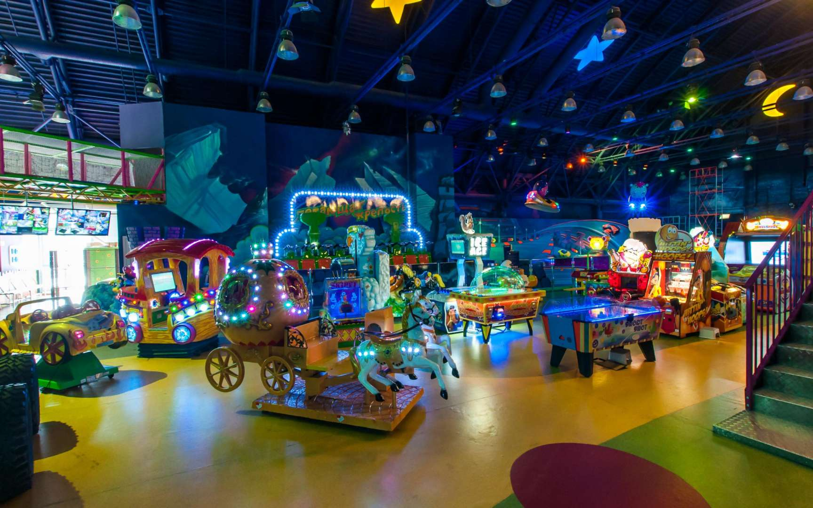

Основание компании "Карусель" датируется 1991 годом, когда был взят курс на улучшение инфраструктуры российского общества в области паркового отдыха и развлечений за счет оснащения парков современными аттракционами европейского производства.Первая веха в нашей истории - 1993 год, когда на территории Центрального парка культуры и отдыха им. Горького был создан Луна-парк "Карусель", первый в России парк, оснащенный аттракционами ведущих европейских производителей. В 1996 году был открыт еще один крупный парк аттракционов в Москве - в парке Победы на Поклонной горе. В 1997 году компания "Карусель" становится членом международной ассоциации парков и производителей аттракционов IAPPA. IAPPA регламентирует стандарты качества в отрасли производства аттракционов и оснащении парков, помогая десяткам входящих в её состав участникам создавать эффективное взаимодействие и оказывая поддержку в информационных, материальных, правовых и многих других аспектах.
С 1999 года мы помогаем другим организациям, которые занимаются эксплуатацией аттракционов и сопутствующей техники, делимся опытом и знаниями, позволяющими нам занимать достойную позицию на рынке поставщиков оборудования для парков и развлекательных центров. В 2002 году мы открыли парк аттракционов в парке "850-летия" Москвы в Марьино. В 2006 году компания “Карусель” запускает программу "Новая жизнь старого парка", в рамках которой полностью обновляется парк аттракционов в подмосковном Орехово-Зуево. В следующем 2007 году полному обновлению аттракционов был подвергнут парк в Балашихе, что не могло не отразиться на его посещаемости и росте популярности у жителей. В 2008 году мы открыли оснащенный современными аттракционами парк в Музее-заповеднике Коломенское. С 2009 по 2010 годы мы занимались обновлением парков в подмосковных городах Долгопрудный и Коломна. В 2012 году были полностью обновлены парки в Дубне и Воскресенске, а также открыт современный парк в Северном Тушине. В 2014 году компания "Карусель" как первый разработчик парков европейского уровня в России и СНГ получила престижную международную награду "Золотой Пони" В настоящее время мы владеем 4 крупными парками развлечений в Москве - в парке Горького, парке Победы на Поклонной горе, в ПКиО "Северное Тушино" и музее-заповеднике "Коломенское", а также сетью мини-парков на территории Москвы и Московской области (Красногорск, Королёв, Люберцы, Коломна, Дубна) . Кроме этого, наши аттракционы успешно функционируют, приносят прибыль их владельцам и радость детям и взрослым в более чем 30 городах России.